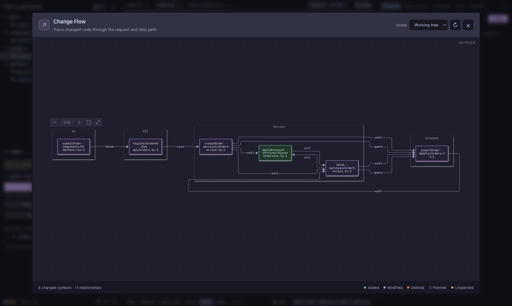

Choose what to trace
See your working tree, a pull request, or the files changed in one agent thread.
Working tree · PR · ThreadFollow a change from the UI a person touches, through the API and services, all the way to the data it reads or writes. One connected view for your code review.
Change Flow maps changed symbols into the layers they belong to, then connects the relationships it can find.
See your working tree, a pull request, or the files changed in one agent thread.
Working tree · PR · ThreadDiff hunks meet px0's symbol outline, so changed functions become focused nodes.
Functions · Routes · FilesSee inferred calls, API fetches, and database queries across the changed path.
Call · Fetch · QuerySelect a node to open the changed file at its line in px0's review view.
Click node → inspect diffThis screenshot comes from the running app. It shows a discount-code change crossing UI, API, service, and database layers.

The graph refreshes when Git status changes, so you can trace an agent's edits while the work is underway.
Ask an agent for a read-only flow plan, then compare its dashed nodes with the code that actually landed.
Nodes lead back to changed files and diff lines. Inferred links guide exploration; the code remains the source of truth.
Build px0-flow, then open it from any Git repository with changes.
Then run ./px0 /path/to/your/repo or install the git px0-flow shortcut. Requires Go 1.24+ and Node.js or Bun.